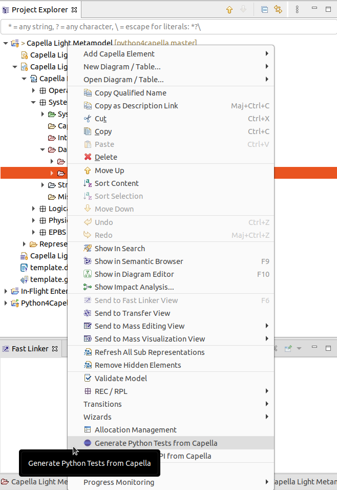

This section describes how you can generate Python tests for the simplified Capella Python metamodel.
The generator is defined in the ProduceCapellaPythonTestsFromCapellaHandler Java class. It uses the simplified Capella metamodel defined in the specification folder of the git repository.
The Capella Light Metamodel is defined using Capella 5.0, you will need this version to generate the Python tests.
Start to import the org.eclipse.python4capella.gen project in your Capella 5.0 workspace and enable developer capabilities to launch a runtime:
To open the specification model, you will need import to the project in the workspace of your runtime.
When you open the specification model, you can open the System Analysis, then the Data folder, then select the Capella Light Metamodel. You can right click on it and select the “Generate Python Tests from Capella” menu:

By default this will generate Python files in “/tmp/capella/” under Windows check for a tmp folder at the root of your disk. You can change this path by editing the generator class: ProduceCapellaPythonTestsFromCapellaHandler.
For the moment, the only customization you can add is to mark a test as read only. This will generate a test that only access a getter for this test and will not make use of any setter.
If you want to add custom tests, you can add them to the capella_manual_tests.py file. You can also add your own Python file and add it to the ManualTestsuite.suite file.